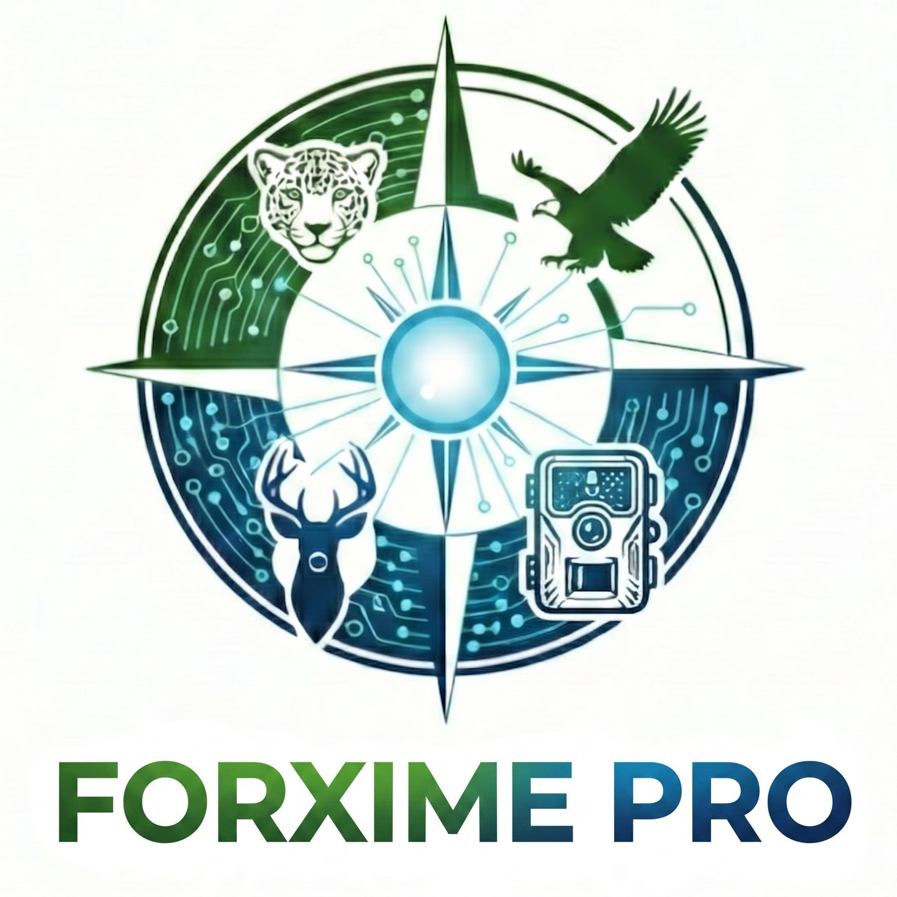

Acerca de FORXIME PRO v2.0
Taxonomía Automatizada por Núcleo de Inteligencia Artificial
FORXIME PRO representa la evolución definitiva de nuestra suite tecnológica. Surgiendo como la versión avanzada y potenciada de FORXIME, FORXIME PRO cuenta con un ecosistema de herramientas diseñadas para decodificar la complejidad de la vida silvestre con un nivel de profundidad científica sin precedentes.
Esta plataforma es la solución líder de BioChavez Forester diseñada para establecer un puente directo entre la ecología de campo y las tecnologías de vanguardia de Google y la IA Generativa.
✨ Inteligencia Artificial y Sensores Remotos
🧠 Cerebro GEMINI (Google IA)
Integración profunda con Gemini 1.5 PRO/Flash para el autollenado de parámetros biológicos. La IA busca en el conocimiento científico global para completar variables requeridas por modelos como REM (Random Encounter Model) y Royle-Nichols, eliminando sesgos manuales.
🛰️ Sensores Remotos Automatizados (GEE)
Conexión directa con Google Earth Engine para extraer automáticamente 17 variables de alta precisión para cada punto de muestreo:
📸 IA Vision & EXIF
Clasificación masiva con extracción automática de metadatos EXIF (fecha, hora, fase lunar). Flujo de Validación en Excel: descarga una base de datos para corregir rápidamente fallos de la IA antes del análisis final.
📊 Eco-Estadística y Comparativas
Realiza comparaciones directas entre zonas seleccionadas (ej. Ejido A vs. Ejido B vs. ANP). Genera automáticamente índices de diversidad alfa (Shannon, Simpson, Pielou), análisis de co-ocurrencia y mapas integrados.
🌡️ Dinámica Espacial
Mapas de calor (Heatmaps) con interpolación KDE. Identificación de puntos calientes de biodiversidad y distribución espacial de abundancia.
🛡️ Conservación y Aprovechamiento
Recomendaciones para Manejo Ganadero y coexistencia. Identificación de potencial de Aprovechamiento Cinegético sustentable (UMAs).
⏰ Solapamiento Temporal
Coeficiente Ridout-Linkie y solapamiento KDE para análisis depredador-presa y patrones de actividad circadiana.
📑 Reportes NLG
Generación de PDF con interpretaciones detalladas y fichas técnicas. Todo el procesamiento en una sola plataforma académica.
🎯 Precisión y Validación
El modelo de identificación ha logrado más del 98% de precisión en pruebas controladas de campo. Ante cualquier discrepancia, la gran facilidad del flujo Excel permite corregir fallos en segundos, asegurando ciencia pura al 100%.
🔄 Tres Opciones de Procesamiento Flexibles
1. Con IA desde Cero
Procesa tus imágenes brutas directamente desde la tarjeta de memoria. El motor de IA clasifica la fauna y estructura tu base de datos automáticamente.
2. Desde Carpetas Preclasificadas
Si ya tienes tus fotos clasificadas manualmente en carpetas, cárgalas directamente y el software generará de forma automática la base de datos con todos los eventos independientes.
3. Desde un Excel Elaborado Previamente
Si cuentas con una base de datos en Excel elaborada con anterioridad, cárgala directamente para omitir la identificación y realizar todo el análisis estadístico avanzado de inmediato.
⚙️ Requerimientos del Sistema
Especificaciones Base
• RAM: 8 GB Mín. (16 GB Rec.)
• CPU: Intel Core i5+ / AMD Ryzen 5+
• Disco: 10 GB libres (Instalación y modelos)
• Internet: Requerido para GEE/Gemini
Potencia de Procesamiento IA
FORXIME PRO puede correr en cualquier PC moderna, pero el rendimiento de la identificación automática depende totalmente de tu hardware:
• Con solo CPU: ~40 a 60 minutos
• Con GPU Nvidia: ~2 a 4 minutos
📦 DESCARGA Y LICENCIA DIGITAL
El instalador profesional de FORXIME PRO v2.0 para Windows incluye todas las dependencias necesarias. Activa tu licencia de forma digital con el ID de Hardware único de tu PC una vez que el piloto esté liberado.
💡 Nota sobre el Lanzamiento: El instalador profesional se encuentra en fase de pruebas piloto cerrada. Una vez liberado, podrás descargarlo libremente y validar la compatibilidad en tu hardware antes de activar tu licencia anual.
📊 Calculadora de Retorno de Inversión (ROI)
Desliza la barra para estimar el número de imágenes de fototrampeo que procesas al año y descubre el tiempo y dinero que ahorrarás utilizando **FORXIME PRO** frente al etiquetado manual tradicional.